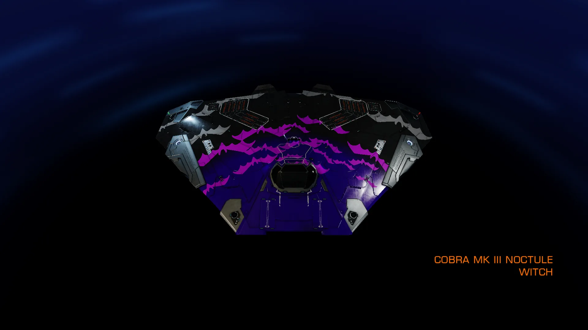
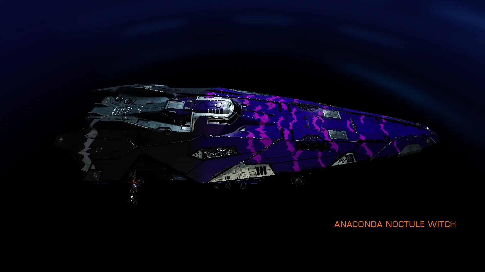
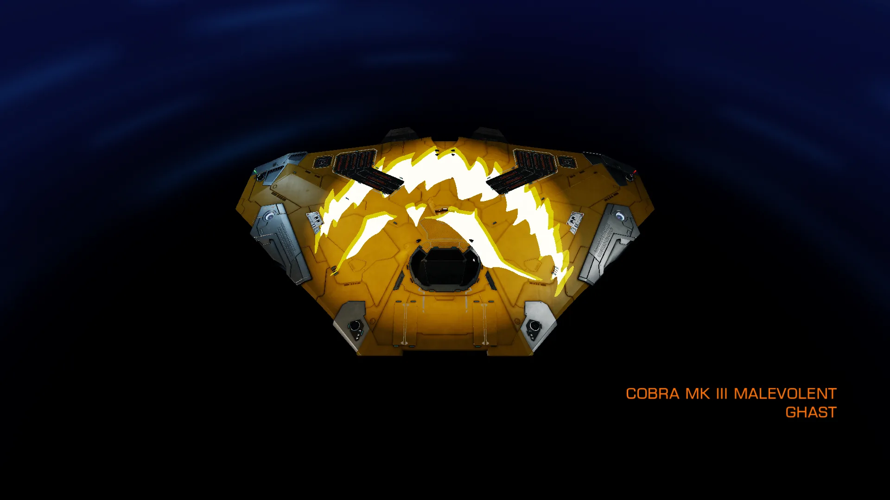
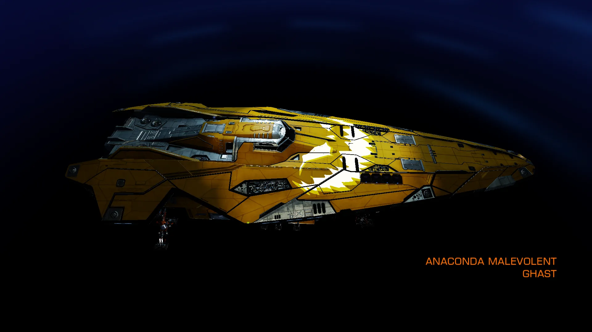

On 29 OCT 3310, a Galnet was released stating that Famed Treasure Hunter Herman Colt had gone missing, whilst searching for the final treasure hoard of Captain Morrigan.
Note: This event ended on the 4th November 3310, while the listening posts and messages are still present, the rewards for completing the puzzle are no longer available – Twitter
Famed Treasure Hunter Herman Colt Missing
29 OCT 3310
A prominent figure in the treasure hunting community has gone missing, prompting speculation as to his fate.
Herman Colt, known for recovering several notable historical artefacts across the core systems, departed the Frenis system three weeks ago along with several other pilots. It is believed Colt’s latest expedition sought the final treasure hoard of Captain Morrigan, a fearsome pirate active in the mid-3200’s.
Rewired spoke to a colleague of Colt’s, Natasha Moore, for an insight into Colt’s whereabouts:
“It’s unlike Colt to maintain radio silence during an expedition. In fact, it’s fair to say he loves the attention. Each new expedition generates buzz among the exploration community, with dozens of pilots begging to be taken along for the adventure.”
“Colt has a soft spot for Captain Morrigan – I think he’s already got some bits and pieces from her life on display at his home. I know he was excited about this trip, and the chance to find Morrigan’s final treasure stash. But typically Colt would have sent me an update by now. Hopefully he’s just having too much fun on his latest voyage.”
Captain Morrigan was known for a series of daring raids between 3253-3261, with her gang often overpowering significantly larger forces to steal cargo from trade convoys in and around Frenis. Her most significant rivals belonged to the Candira gang, and firefights between the two groups were common. Morrigan was last sighted in 3265, and it is believed she died in action around this time.
The first clue to Herman Colt’s fate leads us to the Frenis system, where a Listening Post labelled “Captain Morrigan’s Treasure 1/6” can be found, orbiting body 4.
CAPTAIN MORRIGAN’S TREASURE 1/6
The name’s Colt. Herman Colt. You’ve probably heard of me. Explorer, pioneer and hunter of historical artefacts. The B’nami Locket on display in Anderton Global Museum? I was the one who recovered it. Kitty Kazel’s Blaster, the one rumoured to have fired the first shot in the Alioth Uprising? That‘s right – me again. I follow stories into myths and bring them back to reality. The credits that come with such work aren’t bad, either.
This time I’m taking some rookies on a simple little hunt. A good introduction to the career for them, and a reward of great satisfaction for me: The Treasure of Captain Morrigan.
Oh, Morrigan. My muse, my light. Born decades before me. Lost to the galaxy when l was still a child. But your story inspired me to become the man I am today. To bend fate to my will. Just as you did.
I finally have your star map in my possession. It took years of chasing whispers down many dead ends, but now the key to unlocking the truth of your famous journey is revealed. I’ll retrace your vapour trail to the final known location of your hoard. What will it contain, my Captain? I’m eager to find out for myself.
My squadron consists of four hopefuls, excited to be joining the renowned Herman Colt on another historic discovery. Ahmed, Kovalchuk, Otero and Shanks. Who knows – maybe they’ll make something of themselves one day.
Our first jump is to the Siusi system. Let the hunt begin.
My squadron has reached Siusi with no issues. The aspiring treasure hunters with me babble excitedly on comms now our journey is underway. It reminds me of my youth, somehow. Educational class trips to some museum or historic location, with teachers herding dozens of squawking children. The real ones were always better than the virtual.
From the log, their journey took them to the Siusi system, where a Listening Post can be found orbiting body A 3 a.
CAPTAIN MORRIGAN’S TREASURE 2/6
For now, my own squawkers are amusing enough while I wait for Morrigan’s star map to calibrate our next location. Kovalchuk has a natural charisma and makes the others laugh. She, at least, shows promise. Shanks and Ahmed are more pedestrian, eager to follow instruction and hesitating to do anything without my order.
Otero is… Well, let’s put it this way. Either he’s so meek that his voice doesn’t sustain the comms link, or so inexperienced that he doesn’t know how to configure it. He keeps asking for confirmation on an order to return to our starting point. I haven’t once suggested we turn around, so Otero must be tuned into a different channel.
Siusi was where Captain Morrigan made her name. A daring raid on an industrial convoy carrying precious gemstones. Morrigan’s small raiding party took on a security patrol over double their number and emerged victorious, with a significant haul of loot. A quote from one of the haulage pilots states:
‘She destroyed two dozen ships, then positioned her craft nose-to-nose opposite me. I could see Morrigan smiling through a heavy scar across her jaw. She demanded our cargo, and blew me a kiss as we jettisoned canisters worth millions of credits. Then the pirates were gone, leaving us surrounded by wreckage.‘
I do wish I could have seen her crew in action. Where will you lead us next, Captain?
Along with the log, another message will be received, although this message will be “corrupted” and in need of being decoded.
CORRUPTED MESSAGE #1
wxuq edfn zkloh brx vwloo kdyh d fkdqfh.
brx zhuh qhyhu lqylwhg wr wkh gdqfh.
wuhvsdvvhuv qhyhu uhdfkhg uxuhpd.
The “Corrupted Message” is encoded with a Caesar Cipher, in this case ROT 3 shift (Canonn Decryptor), and once decoded reads:
turn back while you still have a chance.
you were never invited to the dance.
trespassers never reached rurema.
With the Corrupted Message decoded, the next clue leads us to the Rurema system, where a Listening Post can be found orbiting body C 3.
CAPTAIN MORRIGAN’S TREASURE 3/6
We have arrived at our next destination.
Otero is nowhere to be seen. Not visually, not on radar. The buffoon might have jumped to the wrong system. Perhaps he just chickened out of the hunt… Or, were I to attribute him with one iota of cunning, he may have a different plan altogether.
Shortly after we arrived. Ahmed sent a panicked message claiming someone had sent him a message with a warning to turn back.
Not a request. Not advice. A threat.
As a fledgling treasure hunter, Ahmed doesn’t understand the job‘s highly competitive – there are only so many famous figures to plunder. It wouldn’t be the first time I’ve been trailed by a rival looking to throw me off the scent. I have my suspicions that Otero joined us to acquire as much information as possible before breaking off to disrupt us. Perhaps he has designs on Captain Morrigan’s star map. Well, he’d have to take it from my cold, dead ship.
A shame this issue has distracted us from the importance of this system. Here is where Morrigan met her soulmate, Ntuli, at a wild pirate gathering. The legend says that Ntuli challenged Morrigan to a dancing contest. The two of them went song-for-song for several hours, long past the point that other revellers had given up or drunk themselves into a stupor.
With both exhausted, Morrigan asked Ntuli what kept him in the contest. He replied that each song they shared represented a year they would spend together, in love. Ntuli must have been quite the charmer, since from that day forward the pair were inseparable.
The star map has calibrated. We push onwards.
Once again, we have another Corrupted Message, and using the same process as before should help us decode it.
CORRUPTED MESSAGE #2
vwtp dcem dghqtg aqw urqkn vjg itcxg.
vjqug mknngtu dtqmg oa jgctv vjcv fca.
vjg xkevko pgxgt nghv 17 egvk.
This time by using ROT 2 shift (Canonn Decryptor), the message decodes to the following:
turn back before you spoil the grave.
those killers broke my heart that day.
the victim never left 17 ceti.
However, there is an issue with this decoding – if you were to search for the 17 Ceti system, no results would be found. While there is a 17 Phi-1 Ceti system, this is not the correct location for the next clue. The reason for this issue, is that it’s due to the fact that a standard Caesar Cipher only shifts letters, not numbers.
A solution proposed by Ezekil n Amai on the Canonn discord, was to manually shift the individual numbers of the system name (1, 7), by the value of the Caesar Cipher (in this case 2), this would then give us 9, 5.
An alternative solution would be to use a site that also allows numbers to be shifted separately, whist not affecting the letters.
Upon searching the 95 Ceti system, a Listening Post can be found orbiting body 4.
CAPTAIN MORRIGAN’S TREASURE 4/6
Ahmed‘s ship has been destroyed.
His Cobra was shot to pieces by the time we arrived, only a minute after he made the first jump. There’s no sign of his assailant. No wakes. Nothing.
It couldn’t have been Otero… His vessel didn’t have the firepower to take down Ahmed so quickly, and I’d have found evidence of his jump. Someone else has to be tracking us.
Ironic, really. This system is where Captain Morrigan’s love, Ntuli, was ambushed and killed by the Candira gang. Only three years after they met. So much for the romantic ideals of pirates.
The killing was a targeted warning to Morrigan by the Candira leader to stay out of their territory. Their response was a blood oath of vengeance by the heartbroken Captain.
Shanks claims he’s received a garbled comms message telling him to turn back from this path. Just like Otero and Ahmed before him. The boy‘s nervous, babbling about ‘being next’. He’s even claiming that this expedition is cursed. Kovalchuk asked me to abandon the hunt, a request I refused. Now is on the time for nerves. If we’re being hunted, it only proves that we are on the correct path.
My remaining squadron has been informed that I will blow them out of the sky myself if they attempt to jump anywhere but the star map’s next destination. A harsh lesson, but one every treasure hunter must learn. The more danger you’re in, the closer you are to your quarry.
I will not be intimidated by superstitions.
Yet again, we have another Corrupted Message to decode.
CORRUPTED MESSAGE #3
xyvr eaec jvsq qc waiix iqfvegi.
xlswi omppivw hmih mr fieyxmjyp aecw.
xli pewx wgyptxyvi aew mr xvercyae.
By using a ROT 4 shift (Canonn Decryptor), the message decodes to the following:
turn away from my sweet embrace.
those killers died in beautiful ways.
the last sculpture was in tranyuwa.
With the third Corrupted Message decoded, the next clue leads us to the Tranyuwa system, where a Listening Post can be found orbiting body A 5 a.
CAPTAIN MORRIGAN’S TREASURE 5/6
All three remaining ships arrived at this system. However, Shanks’ ship is not responding to any comms, and it floats freely away from the nav beacon.
A visual inspection shows his cockpit is empty. Only Kovalchuk and I remain.
I know where we are. This location marked the end of Captain Morrigan’s vendetta ride against those who killed her beloved. Over several years, she tracked down and murdered each of the Candira pirates responsible for the death of Ntuli. Their final hours were both inventive and terrifying in every instance. Morrigan’s focus on revenge was all-consuming, to the detriment of all other aspects of her life.
This may sound strange, Morrigan, but I can relate. Your story has fuelled me for so many years. I have researched every possible piece of information about your life. The credits I have spent on collecting any relic of your pirate career are beyond counting. Weapons. Clothing. Personal artefacts. Maps. Records of raids. Private logs. Authentic images. Everything. EVERYTHING.
There is a room in my apartment dedicated to your history. And I dream within it often.
Do you now haunt me, Morrigan? Did I acquire so much of your life that l have summoned your soul to follow me on the trail to your final treasure? My obsession with you now reflected in a curse?
If you can hear me, then know that I spit in the supernatural’s gaze. Your eyes are long dead, and the last piece of your life will complete my collection.
Your star map has finally deduced the location of your hidden riches. Watch as I take it for myself, you hellcat. The remnants of the great Captain Morrigan’s life will decorate my own legend.
And again, another Corrupted Message to decode.
CORRUPTED MESSAGE #4
uvso cbdl gspn nz dvstfe tpvm.
uif pomz nfnpsz ofwfs tpme.
tibepxt mvsl jo ijq 8344.
This time, using a ROT 1 shift to decode (Canonn Decryptor), gives us the following message:
turn back from my cursed soul.
the only memory never sold.
shadows lurk in hip 8344.
Again, much like the second Corrupted Message, with have a system name with numbers in it. This time, the system name listed in the decoded message is rather far away at approximately 2,100 Ly’s, instead of the system name not existing.
However, if we use a similar solution like the one we used with the second message, we should get a valid system name that is much closer. In this case, we want to shift the values 8, 3, 4, 4 by 1, this leaves us with 7, 2, 3, 3.
By searching for HIP 7233 we indeed find a system that is closer, and when entering the HIP 7233 system, a Listening Post can be found orbiting body B 1.
CAPTAIN MORRIGAN’S TREASURE 6/6
If anyone’s reading this – leave now. Please.
I’m Maja Kovalchuk. l was part of Herman Colt’s expedition to find The Treasure of Captain Morrigan. His last expedition, I guess.
We’d followed a star map Colt had. The bastard threatened to destroy my ship if I didn’t stick with him, even after the others were dead. He‘d gone… strange. By the time we got here, I mean. The closer we were to the treasure the worse Colt got, ranting and raving about ‘seeing’ the Captain. Kept daring her to appear. It was like something took hold of him. Something dark.
But when we reached this planet, there WAS another ship. I can’t explain it properly, but… Jeez, this thing was there but not there. My scanners couldn’t identify the stuttering energy signature.
When we made visual contact it… My canopy display must have caught interference, some kinda radiation maybe. The unknown ship was drenched in static. I couldn’t focus on it. Every time I tried these crazy distorted patterns would… they would…
Colt flew into a rage and boosted towards it, hardpoints deployed. The unknown ship took off, with Colt in pursuit. My God, the noises he made… I’ve never heard anything so angry. The comms channel peaked so hard I had to shut it off.
For a second it sounded like two voices screaming together in hatred.
When I finally caught up, Colt’s ship was a wreck. He’d floated out of the ship’s ruined canopy, strapped to his chair. It was horrible. His eyes were open. Rage still twisted his face, even in death.
Listen to me. Morrigan’s treasure is attached to this beacon. I ain’t touchin’ It. Take It, or don’t take it. But I swear this whole voyage was cursed. I worry about what’ll happen if you snatch the loot.
If you’ve already taken it, then don’t stick around to find out what happens next. Run.
Along with the final message explaining Herman Colt’s fate, a second message is included listing the treasure that was attached to the beacon.
ITEMS RECEIVED
The following has been added to your inventory:
– 40,000,000 Credits
Paint Jobs:
– Cobra Mk III Noctule Witch
– Anaconda Noctule Witch
– Cobra Mk III Malevolent Ghast
– Anaconda Malevolent Ghast
Suit Cosmetic:
– Trlckster Apple Set



